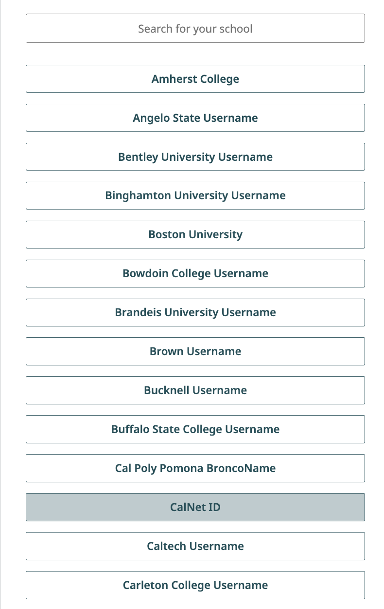
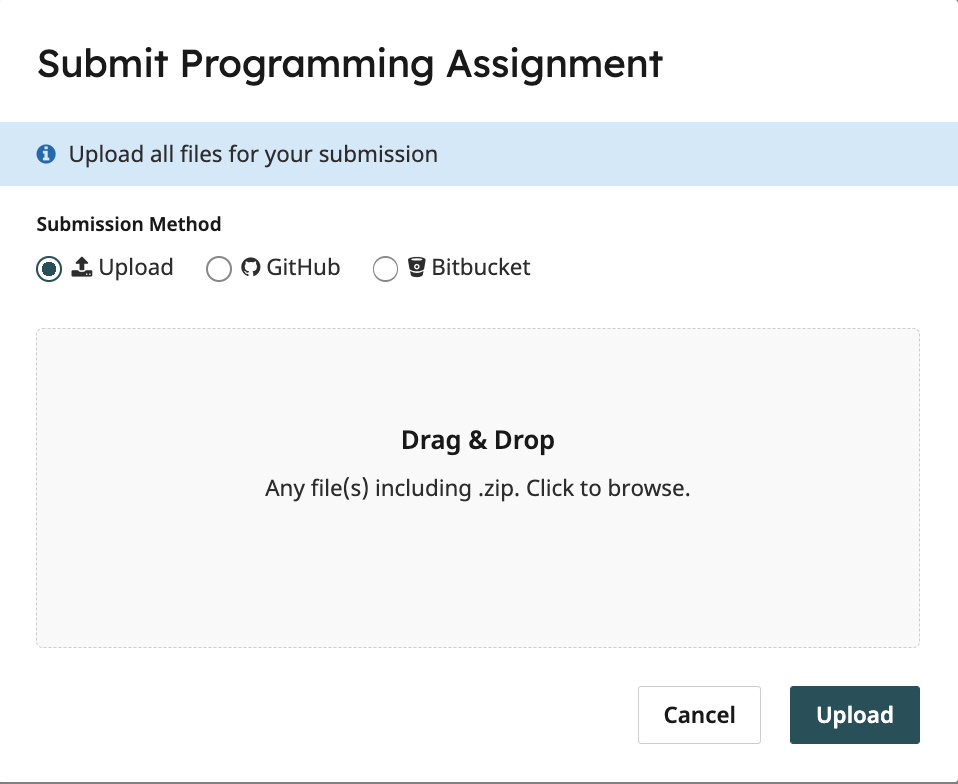

实验 0：入门
截止时间为 6 月 23 日星期二 23:59。
起始文件
下载 lab00.zip。
本实验为所有学生必修。
出勤
除了出勤外，你还需要提交实验问题才能获得实验学分。
如果你因正当理由（如生病或时间冲突）错过了实验，或者由于某种原因没有被签到，请在一周内发邮件至 cs61a@berkeley.edu 以获得出勤分。
简介
本实验说明了如何在你的电脑上设置环境来完成作业， 并介绍了 Python 的一些基础知识。如果你需要任何帮助，请在 Ed 上发帖或在你的指定实验班上寻求帮助。
以下是实验的概要：
环境设置：设置本课程所需的必备软件。这需要几个 组件，如下所列。
- 安装终端：安装终端，以便你可以在本课程中操作文件 并运行 OK 命令。
- 安装 Python 3：在你的电脑上安装 Python 3.8 或更高版本 （最好安装 Python 3.11 或更高版本）。
- 安装文本编辑器：安装用于编辑本课程
.py文件的软件。 几乎所有学生都使用 VS Code。
- 复习：你的电脑文件系统 这是关于你的电脑文件系统 工作原理的概述，包括绝对路径和相对路径的含义。
- 演练：使用终端：本节将带你了解如何使用 终端和 Python 解释器。
- 演练：组织你的文件：本节将带你了解如何 使用终端来组织和导航本课程的文件。 每个人都应该阅读本节。
- 必修：完成作业：你必须完成本节才能获得 作业学分。这部分的主要目的是让你练习使用我们的 软件。
- 必修：提交作业：提交你的作业。
- 附录：有用的 Python 命令行选项：这些命令在 调试你的工作时很有用，但不是完成实验所必需的。我们 附上这些内容是因为它们在整个课程中可能会对你有所帮助。
环境设置
要设置你的设备，请选择与你的操作系统相对应的指南。
你的第一个作业
在做作业时，请确保终端的工作目录是正确的（通常是你解压作业的位置）。
1) Python 会输出什么？(WWPD)
实验作业的一个组成部分是预测 Python 解释器的行为。 我们称这些问题为"Python 会输出什么？"
在本课程中，我们使用一个名为 ok 的程序来评估你的知识。
ok 会包含在每次作业中。让我们来了解
如何用 ok 做一道 WWPD 题。
打开你的终端，确保你在 lab00 目录中，该目录包含
本次作业解压后的实验文件。在该目录中，输入 ls 来验证
是否有以下文件：
lab00.py：本实验的起始文件ok：我们的测试程序lab00.ok：ok的配置文件
如果你没有看到这些文件，请使用 cd 导航到正确的目录。
在没有
ok的目录中尝试运行ok会产生错误。
在终端中输入以下命令，它将运行 ok 并开始本部分：
python3 ok -q python-basics -u命令
python3 ok -q python-basics -u告诉 Python 解释器 运行当前工作目录中名为ok的文件。-q python-basics -u是提供给ok程序的输入，用于指定 要运行哪个问题。如设置部分所述，如果
python3命令不起作用， 请尝试使用python或py。
你将被提示输入各种语句/表达式的输出。 你必须正确输入才能继续，但回答错误不会扣分。
第一次运行 Ok 时，系统会提示你输入 bCourses 邮箱。 请按照这些说明操作。
>>> x = 20
>>> x + 2
______22
>>> x
______20
>>> y = 5
>>> y = y + 3
>>> y * 2
______16
>>> y + x
______282) 实现函数
在 VS Code 中打开整个 lab00 文件夹。你可以将文件夹拖到 VS
Code 应用程序上，或者打开 VS Code 并在 文件 菜单中使用 打开文件夹...。
打开 lab00 文件夹后，你将在 VS Code 窗口左侧面板的文件
资源管理器中看到 lab00.py 文件。点击它开始编辑
lab00.py，这是你要提交以获得实验学分的文件。
重要：在 VS Code 的 文件 菜单中打开 自动保存。这样，
每当你修改文件时，内容都会自动保存。如果你不启用 自动保存，
请务必频繁保存你的工作。
推荐：使用 VS Code 内置的终端（菜单中的 终端 > 新建终端）。
如果你按照上面的说明在 VS Code 中打开了作业文件夹，
那么 VS Code 终端的工作目录将自动设置为
作业文件夹，这意味着你不需要更改目录来检查
你的工作。
现在完成实验。你应该能看到一个名为 twenty_twenty_six 的函数，
它有一个空白的 return 语句。那个空白是你唯一应该修改的部分。
将其替换为一个计算结果为 2026 的表达式。你能想出
最有创意的表达式是什么？
3) 运行测试
我们也将使用 ok 来测试你的代码。切换到终端。确保你在包含
ok 和 lab00.py 的 lab00 目录中。
提示：如果你 在 VS Code 中打开了
lab00文件夹并在 VS Code 的终端菜单中选择新建终端，那么终端将自动在lab00目录中。
现在，运行以下命令来测试你的代码：
python3 ok请记住，如果你使用的是 Windows 且
python3命令不起作用，请尝试使用python或py。
如果你的代码编写正确并且你已完成测试解锁，你应该会看到测试成功：
=====================================================================
Assignment: Lab 0
=====================================================================
~~~~~~~~~~~~~~~~~~~~~~~~~~~~~~~~~~~~~~~~~~~~~~~~~~~~~~~~~~~~~~~~~~~~~
Running tests
---------------------------------------------------------------------
Test summary
2 test cases passed! No cases failed.如果你没有通过测试，ok 会显示类似以下的内容：
---------------------------------------------------------------------
Doctests for twenty_twenty_six
>>> from lab00 import *
>>> twenty_twenty_six()
0
# Error: expected
# 2026
# but got
# 0
--------------------------------------------------------------------------
Test summary
0 test cases passed before encountering first failed test case在文本编辑器中修复你的代码，直到测试通过。
每次运行
ok时，ok都会尝试备份你的工作。如果它 显示"连接超时"或你没有注册 课程，不用担心。你仍然可以提交此作业并获得学分。
4) 学期前调查
作为本作业的一部分，请填写 学期前调查表单。
完成调查后，你将看到一个密码短语。将
此密码短语作为字符串放在 Python 文件中
passphrase = 'REPLACE_THIS_WITH_PASSPHRASE' 所在的行上。
例如，如果密码短语是 abc，则该行应为 passphrase = 'abc'。
使用 Ok 测试你的代码：
python3 ok -q presem_survey本地检查你的分数
你可以通过运行以下命令在本地检查本作业每道题的分数
python3 ok --score这不会提交作业！ 当你对分数满意时，将作业提交到 Gradescope 以获得学分。
提交作业
现在你已经完成了第一个作业，是时候提交了。你可以按照以下步骤提交你的作业并获得分数。
重要：你只需要提交到 Gradescope；不需要提交到 Ok。
通过 Gradescope 提交
使用你的 CalNet ID 通过学校凭据登录 Gradescope。登录后你将被带到仪表板。


- 在你的仪表板上，选择本课程。（你应该已经被添加到 Gradescope。如果不是这种情况，请在 Ed 上发一个私信。）这将带你到课程中你可以提交的作业列表。在此列表中，你将看到作业的状态、发布日期和截止日期。
- 点击作业 Lab 0 打开它。
当对话框出现时，点击灰色区域拖放。这将打开你的文件查找器，你应该选择你为本作业编辑的代码文件
lab00.py。
选择文件后，点击上传按钮。上传成功后，你将在屏幕上看到确认消息并收到一封电子邮件。

接下来，等待几分钟让自动评分器评分你的代码文件。你的最终分数将显示在右侧，输出应与你本地测试的相同。你可以在右上角标有代码的标签页查看你提交的代码。如果有任何错误，你可以编辑
lab00.py代码并点击屏幕底部的重新提交来重新提交代码文件。在截止日期前可以无限次重新提交作业。
你对 WWPD 问题的回答不需要提交到 Gradescope，也不需要提交。实验学分基于代码编写题。
恭喜，你刚刚提交了你的第一个作业！
附录：有用的 Python 命令行选项
ls：列出当前目录中的所有文件cd <path to directory>：切换到指定的目录mkdir <directory name>：使用给定名称创建新目录
以下是在文件上运行 Python 最常见的方式。
不使用任何命令行选项将运行你提供的文件中的代码并 返回到命令行。如果你的文件只包含函数 定义，除非有语法错误，否则你不会看到任何输出。
python3 lab00.py-i：-i选项运行你提供的文件中的代码，然后打开 交互式会话（带有>>>提示符）。然后你可以 求值表达式，例如调用你定义的函数。要退出，输入exit()。你也可以在 Linux/Mac 机器上使用键盘快捷键Ctrl-D，或在 Windows 上使用Ctrl-Z Enter。如果你在交互式运行时编辑了 Python 文件，你需要 退出并重启解释器才能使更改生效。
以下是我们如何交互式地运行
lab00.py：python3 -i lab00.py-m doctest：运行文件中的 doctest，即函数 docstring 中的示例。文件中的每个测试由
>>>后跟一些 Python 代码和 预期输出组成。以下是我们如何运行
lab00.py中的 doctest：python3 -m doctest lab00.py当我们的代码通过所有 doctest 时，不会显示任何输出。否则， 将显示关于失败测试的信息。